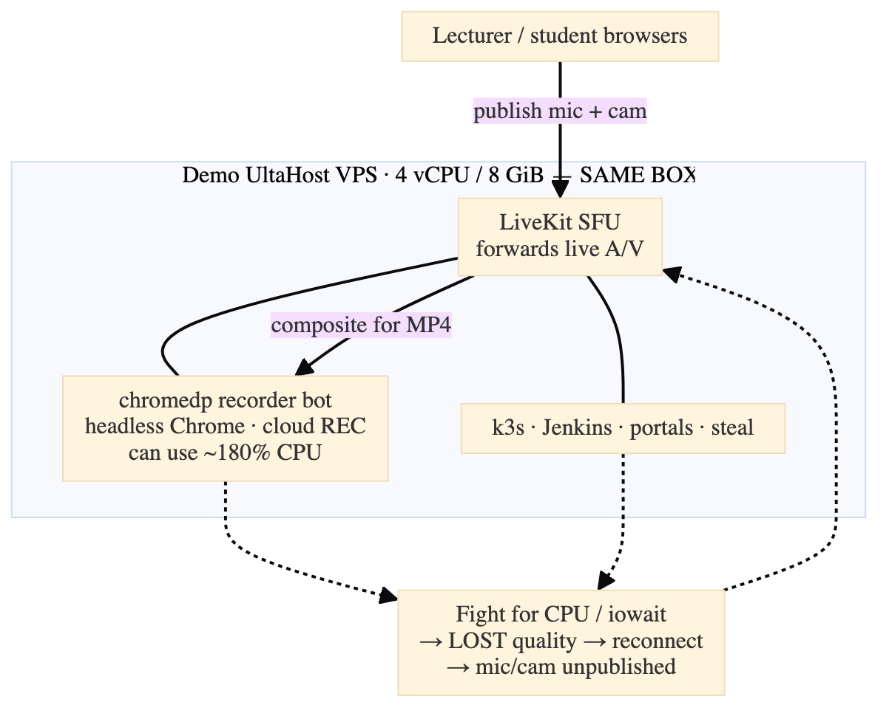
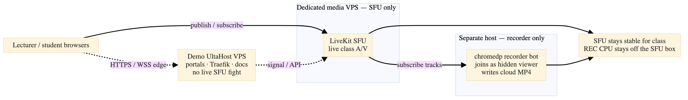

Demo Partial
Do not co-locate
Split target
SFU not co-located with chromedp
Plain meaning: the live class media server (LiveKit SFU) and the cloud recording bot (chromedp / headless Chrome) should not run on the same small VPS. When they share one box, recording CPU fights the live session — reconnect loops and mic/cam drop.
Terms
| Term | Meaning |
|---|---|
| SFU | Selective Forwarding Unit — LiveKit server that forwards everyone’s live audio/video in the classroom. |
| chromedp | Headless Chrome bot used by plugNmeet cloud REC. It joins the room like a hidden viewer and captures the composite to MP4. |
| Co-located | Both processes on the same machine (today: Demo UltaHost 4 vCPU). Bad for Demo proof when REC is on. |
| Not co-located | SFU on a dedicated media host; recorder on a different host. Live class CPU stays free of chromedp load. |
1. Bad — co-located (interim Demo risk)

2. Target — SFU and chromedp on separate hosts

Related
- Audit — 2026-11-20 UltaHost interim SFU reconnect
- Online class known issues — guidance
- Classroom media bridge — proposal diagrams
- Classrooms API — classrooms.md